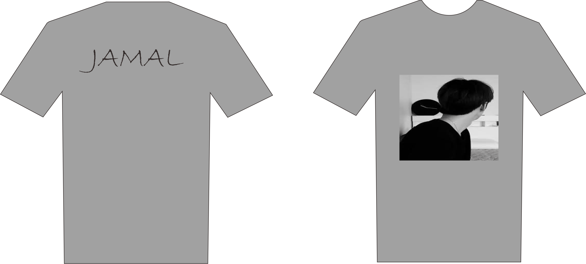

1. jersey
Bahan jersey premium ini kerap digunakan sebagai sport apparel brands besar karena teksturnya yang lembut dan elastis. Cocok digunakan sebagai bahan utama pakaian olahraga yang fitted. Selain itu, jenis kain ini juga banyak diminati karena cepat menyerap keringat sekaligus mudah kering. Harga jersey 200.000.00

2. kaos couple
Baju couple dari bahan katun dan rayon sangat nyaman digunakan ketika cuaca panas. Kedua bahan ini memiliki daya serap keringat yang tinggi dan lembut. Bahan katun yang paling sering dipilih untuk bahan baju couple adalah katun baby terry dan katun combed. Harga 1set 85.000.00

3. kaos
Bahan kaos yang adem terbuat dari viscose. Bahn yang satu ini bisa jadi pilihan yang tepat jika Anda menginginkan kaos yang tidak mudah kusut. Cocok digunakan di luar rumah. Tak hanya itu saja, bahan ini juga tetap bisa menyerap keringat secara maksimal. Tetap nyaman dan tidak membuat gerah. Harga 56.000.00

4.kaos Game
Baju Kaos Gaming Premium Quality Bahan 100 Persen Cotton Lembut kaos Distro game online anak dewasa pria wanita cowok cewek GAMING. Harga 80.000.00

5. kaos rancing
Kaosnya Cotton Combed 30S/ 24S tebel, adem, lembut nyaman dipakai, serta cepat menyerap keringat. ( standar distro ). Sablon nya Digital Cutting Polyflex, DTS, & DTF. Warna Cerah, Anti Kerut, Tidak luntur , Tidak Lengket & Tidak pecah-Pecah ( tahan lama ) . Harga 84.000.00